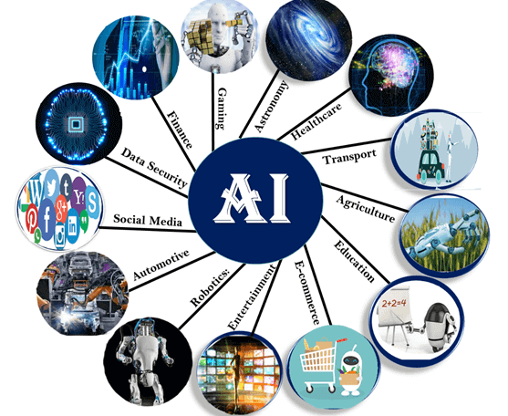

Cumpărăturile și publicitatea online
Inteligența artificială este utilizată pe scară largă pentru a oferi internauților recomandări personalizate, pe baza căutărilor sau achizițiilor lor anterioare, de exemplu, sau a altor tipuri de comportament online. IA are o importanță enormă în economie, pentru optimizarea produselor, planificarea inventarelor, logistică etc.

Căutarea pe internet
Motoarele de căutare învață din volumul imens de date introduse de utilizatori pentru a oferi rezultate pertinente.
Asistenții personali digitali
Telefoanele inteligente utilizează IA pentru a oferi produse cât mai adaptate și mai personalizate. Asistenții virtuali care răspund la întrebări, oferă recomandări și contribuie la organizarea activităților zilnice au devenit omniprezenți.
Traducerea automată
Software-urile de traducere, scrisă sau orală, utilizează inteligența artificială pentru a face traducerile, dar și pentru a le îmbunătăți. Același este și cazul altor funcții, cum ar fi subtitrarea automată.
Locuințe, orașe și infrastructuri inteligente
Termostatele inteligente învață din comportamentul nostru pentru a economisi energie, iar dezvoltatorii orașelor inteligente speră să controleze traficul pentru a îmbunătăți conectivitatea și a reduce ambuteiajele.
Automobilele
Deși vehiculele autonome nu sunt încă norma, automobilele utilizează deja funcții de siguranță bazate pe IA. UE a contribuit, de exemplu, la finanțarea VI-DAS, senzori automați care detectează posibilele situații periculoase și accidente.
Navigația este în mare măsură bazată pe IA.
Securitatea cibernetică
Sistemele IA ajută la identificarea și combaterea atacurilor cibernetice și a altor amenințări cibernetice bazate pe inputul continuu de date, recunoscând tiparele și trasând atacurile.
Inteligența artificială împotriva Covid-19
În contextul epidemiei de Covid-19, IA este utilizată în imagistica termică din aeroporturi și din alte locuri. În medicină, IA poate ajuta la recunoașterea infecțiilor prin tomografia computerizată a plămânilor. De asemenea, a fost utilizată la colectarea datelor pentru a urmări răspândirea bolii.
Combaterea dezinformării
Anumite aplicații de IA pot detecta știrile false și dezinformarea prin extragerea informațiilor false postate pe platformele de socializare, căutând cuvinte senzaționale sau alarmante și identificând sursele online considerate oficiale.
IA va transforma practic toate aspectele vieții și economiei.
Sănătatea
Cercetătorii studiază cum poate fi utilizată IA pentru a analiza cantități mari de date medicale și a găsi modele care ar putea conduce la noi descoperiri în medicină și la îmbunătățirea diagnosticării pacienților.
De exemplu, a fost creat un program de IA pentru a răspunde apelurilor de urgență, care să recunoască un stop cardiac în timpul apelului mai rapid și mai frecvent decât dispeceratul medical. Un alt exemplu este KConnect, cofinanțat de UE, care dezvoltă servicii de căutare de text multilingve, pentru a ajuta oamenii să găsească cele mai relevante informații medicale disponibile.
Transportul
IA ar putea îmbunătăți siguranța, viteza și eficiența traficului feroviar prin reducerea la minimum a frecării roților, maximizarea vitezei și permiterea conducerii autonome.
Fabricația
IA poate ajuta producătorii europeni să devină mai eficienți și să readucă fabricile în Europa, prin utilizarea roboților în fabricație, optimizarea vânzărilor și prin anticiparea din timp a întreținerii sau a întreruperilor în fabricile inteligente.
SatisFactory este un proiect de cercetare cofinanțat de UE, care utilizează sisteme colaborative și de realitate augmentată pentru a crește gradul de satisfacție profesională în fabricile inteligente.
Alimentația și agricultura
Inteligența artificială poate fi utilizată pentru a construi unui sistem alimentar sustenabil în UE: IA poate asigura o alimentație mai sănătoasă prin reducerea la minimum a utilizării îngrășămintelor, a pesticidelor și irigațiilor, precum și prin susținerea productivității și reducerea impactului asupra mediului. Roboții ar putea elimina plantele dăunătoare, reducând astfel utilizarea erbicidelor, de exemplu.
Numeroase ferme din Europa utilizează deja IA pentru a monitoriza mișcarea, temperatura și consumul de hrană pentru animalele lor.
Administrația și serviciile publice
Utilizând o gamă largă de date și recunoscând tiparele, IA ar putea oferi avertizări timpurii privind dezastrele naturale, permițând o pregătire eficientă și atenuarea consecințelor